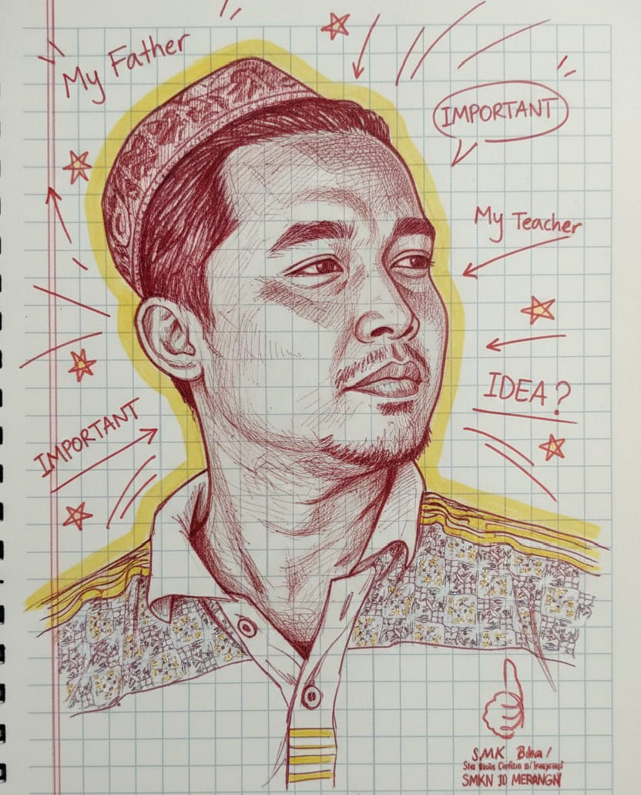

"Guru yang hebat tidak memaksakan pandangannya, melainkan mengasah jendela agar muridnya bisa melihat dunia dengan caranya sendiri."
(Sentuh lilin di atas untuk menyalakan terang)

Di hari yang istimewa ini, Anggi ingin mengambil kesempatan untuk mengucapkan lebih dari sekadar selamat ulang tahun.
Hari ini adalah hari spesial yang memperingati sosok yang menjadi inspirasi bagi banyak orang, termasuk Anggi.
Dengan setiap tahun yang berlalu, Bapak terus menunjukkan dedikasi, kebijaksanaan, dan kebaikan hati yang luar biasa.
Semoga hari ulang tahun ini menjadi permulaan tahun yang penuh prestasi dan kebahagiaan bagi Bapak.
Teruslah mengejar impian, menginspirasi orang di sekitar Bapak, dan menciptakan momen-momen tak terlupakan.
Bapak adalah sosok yang layak dihormati dan dikagumi, walaupun hari ini Anggi tidak dapat merayakan hari istimewa ini bersama Bapak. Semoga setiap langkah Bapak diiringi keberhasilan dan kebahagiaan.
Sekali lagi selamt ulang tahun bapak!! Sukses selalu dan sampai bertemu di bulan Maret nanti.
Salam Hangat
Anggi Thoat A